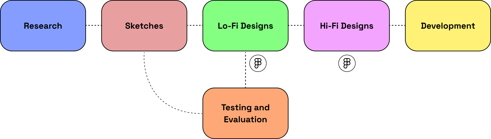

Role: UX/UI Designer
Timeline: 2 Months (Apr - July 2022)
Tools: Figma
Challenge
With 7+ years of experience in the Adult Industry. Missionary To Madame's key goal is to take customers from an ordinary sex life to extraordinary with simple advice and tips. The client approached us to design and build a website for their adult store. The client's requirements included ecommerce implementation, digital products implementation, a blog, and to implement a welcoming atmosphere.
Approach
Research
Market research was conducted on competitors' webites to identify their strengths and weaknesses. It was uncovered that some of the adult stores invoked a 'taboo' atmosphere when users entered, the colour palettes caused it to be difficult to read, and the content was not consistent. However there were strengths from some competitors, these included well-presented content, warm colour palettes, and a layout that was easy to navigate through.
Sketches
A rough sketch was created for the client to review the layout of the homepage and product page.
Low-Fidelity Design
Low-fidelity designs were created to present a more concise idea to the client of the website's elements. The designs would also be provided to the web development team to gain an estimated time of completion, costs, and a general idea of how the other pages would be illustrated.

High-Fidelity Design
I designed the high-fidelity designs of the homepage and product page to showcase to the client the colour palette, images, elements and placement of content. The high-fidelity designs of these two pages were then shown to the web development team to design the other pages in reference to these two pages.


Designs
Outcome
The client's feedback was highly positive, leading to the establishment of a partnership. Cinemano now oversees backend maintenance of the website, occasionally updating the frontend as requested by the client. This website enabled the business to establish a strong online presence and introduce their online courses, which significantly benefited their customer base. The store has become notable in this industry in Sydney.